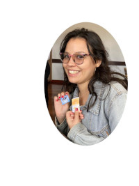

Olá! Eu sou a Regina!
Sou formada em Ciências Biológicas Bacharelado pela Universidade Federal do Estado do Rio de Janeiro. Também Técnica em Análises clínicas pelo Instituto Henry Dunant.
Quer saber porque agora estou aprendendo novas ferramentas para desenvolvimento de sites?
Então continue a leitura...
Já antes do último ano de graduação buscava uma carreira onde as habilidades de um pesquisador fossem valorizadas(por isso a formação técnica).
Dois meses depois de concluir o curso de análises clínicas fui aprovada em um concurso com vagas temporárias na fundação saúde.Entretanto, optei por não seguir com a matrícula por conta do baixo salário e da alta carga de trabalho que prejudicaria a confecção do meu trabalho de conclusão da faculdade.
Em seguida, uma pandemia mundial prejudicou o andamento da faculdade e da possibilidade de obter um emprego resultado no direcionamento da minha ateção para as vagas em concursos públicos. Foi depois de mais de um ano de isolamento estudando remotamente que decidi investir tempo e recursos para aprender as tecnologias utilizadas por mim no período de isolamento.
Resultado???
APAIXONEI
😍
😍
😍
Ao conhecer as ferramentas compreendi que o mundo dos programadores não era só para pessoas especiais e que na verdade os sites, programas, aplicativos são fruto de anos de estudo e experimentação.... a base de toda boa pesquisa (minha atividade preferida).O próximo passo natural foi buscar o curso ideal para mim que é o tecnólogo de Análise e Desenvolvimento de Sistemas.